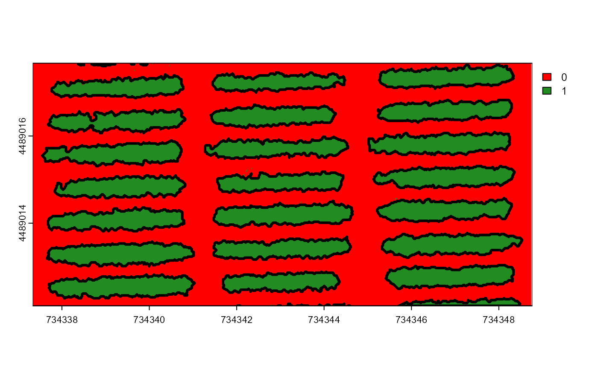

Converts a raster mask into a vectorized sf object, with various options
for morphological operations and filtering.
Usage
mosaic_vectorize(
mask,
aggregate = NULL,
watershed = TRUE,
tolerance = 1,
extension = 1,
opening = FALSE,
closing = FALSE,
filter = FALSE,
erode = FALSE,
dilate = FALSE,
fill_hull = FALSE,
lower_size = NULL,
upper_size = NULL,
topn_lower = NULL,
topn_upper = NULL
)Arguments
- mask
An optional mask (SpatRaster) to mask the mosaic.
- aggregate
The size as a fraction (percentage) of the input image size. Either a scalar (eg., 50), or a length-two numeric vector. In the last, different percentage reduction/expansion can be used for columns, and rows, respectively.
- watershed
If
TRUE(default), performs watershed-based object detection. This will detect objects even when they are touching one another. If FALSE, all pixels for each connected set of foreground pixels are set to a unique object. This is faster but is not able to segment touching objects.- tolerance
The minimum height of the object in the units of image intensity between its highest point (seed) and the point where it contacts another object (checked for every contact pixel). If the height is smaller than the tolerance, the object will be combined with one of its neighbors, which is the highest.
- extension
Radius of the neighborhood in pixels for the detection of neighboring objects. A higher value smooths out small objects.
- opening, closing, filter, erode, dilate
Morphological operations (brush size)
dilateputs the mask over every background pixel, and sets it to foreground if any of the pixels covered by the mask is from the foreground.erodeputs the mask over every foreground pixel, and sets it to background if any of the pixels covered by the mask is from the background.openingperforms an erosion followed by a dilation. This helps to remove small objects while preserving the shape and size of larger objects.closingperforms a dilatation followed by an erosion. This helps to fill small holes while preserving the shape and size of larger objects.filterperforms median filtering in the binary image. Provide a positive integer > 1 to indicate the size of the median filtering. Higher values are more efficient to remove noise in the background but can dramatically impact the perimeter of objects, mainly for irregular perimeters such as leaves with serrated edges.
- lower_size, upper_size
Lower and upper limits for size for the image analysis. Plant images often contain dirt and dust. Upper limit is set to
NULL, i.e., no upper limit used. One can set a known area or uselower_size = 0to select all objects (not advised). Objects that matches the size of a given range of sizes can be selected by setting up the two arguments. For example, iflower_size = 120andupper_size = 140, objects with size greater than or equal 120 and less than or equal 140 will be considered.- topn_lower, topn_upper
Select the top
nobjects based on its area.topn_lowerselects thenelements with the smallest area whereastopn_upperselects thenobjects with the largest area.
Value
An sf object containing vectorized features from the raster mask,
with added area measurements.
Examples
library(pliman)
mask <- image_pliman("mask.tif")
shp <- mosaic_vectorize(mask, watershed = FALSE)
mosaic_plot(mask)
shapefile_plot(shp, add = TRUE, lwd = 3)
